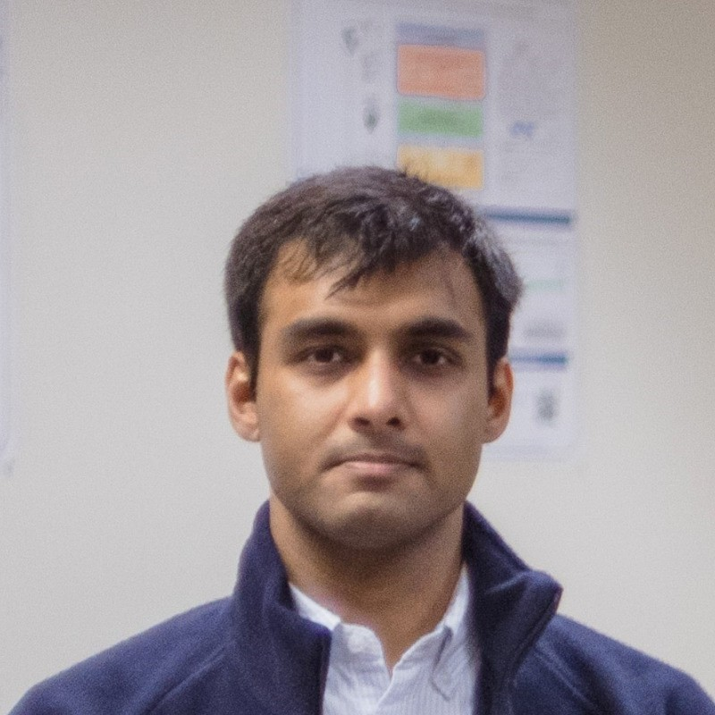

saurabh.mathur@tu-darmstadt.de
Mission. I am interested in building intelligent agents that can reliably reason about different forms of information, and communicate the results in human-intelligible forms. This entails a number of challenges in probabilistic and neurosymbolic AI, including reasoning under uncertainty, knowledge-guided learning, and multi-modal fusion. Since these challenges are frequently encountered in healthcare, I am also interested in adapting probabilistic and neurosymbolic methods for complex clinical problems such as modeling the risk of adverse pregnancy outcomes (e.g., preterm birth and gestational diabetes) and understanding the causes of neurological injury in children on life-support (ECMO).
Timeline.
| 2025 - now: | Postdoctoral Researcher at the AIML Lab, CS Department, TU Darmstadt, Germany |
| 2020 - 2025: | Ph.D. (Computer Science) student at the Statistical Artificial Intelligence and Relational Learning Group, CS Department, The University of Texas at Dallas, USA |
| 2018 - 2020: | M.S. (Computer Science) student at Luddy School of Informatics, Computing, and Engineering, Indiana University Bloomington, USA |
| 2014 - 2018: | B.Tech. (Information Technology) student at Vellore Institute of Technology, India |
Publications
Update data-profile-authors to match this template user.
Publications can also be listed on DBLP, Semantic Scholar, and Google Scholar.
Activities
Conference and Event Organizations:

Program Committee Member/Reviewer:
Conferences. AISTATS (2024), NeurIPS (2024, 2025), AAAI (2025, 2026), ICLR (2025, 2026), UAI (2025, 2026)
Journals. DAMI, JAIR, DMKD